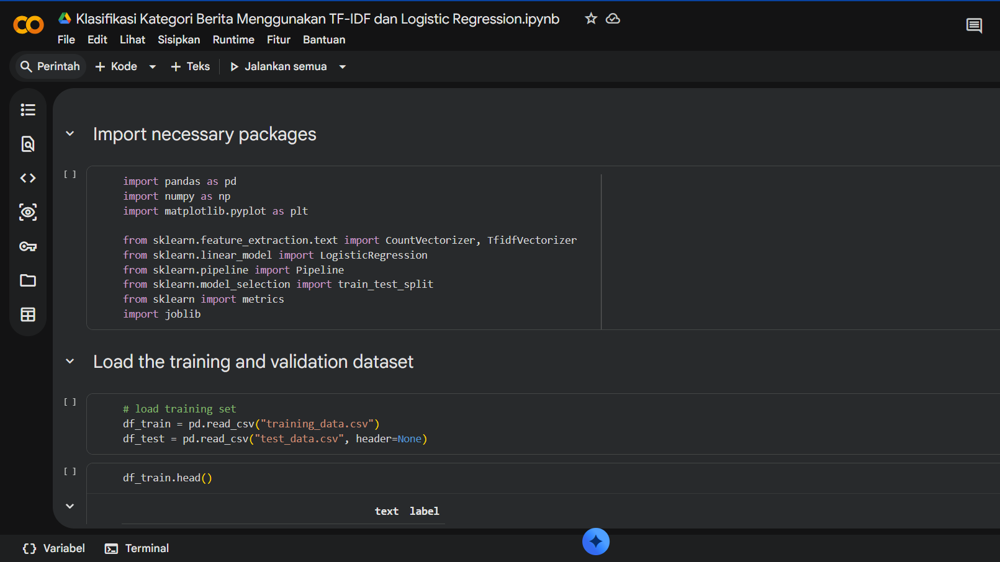
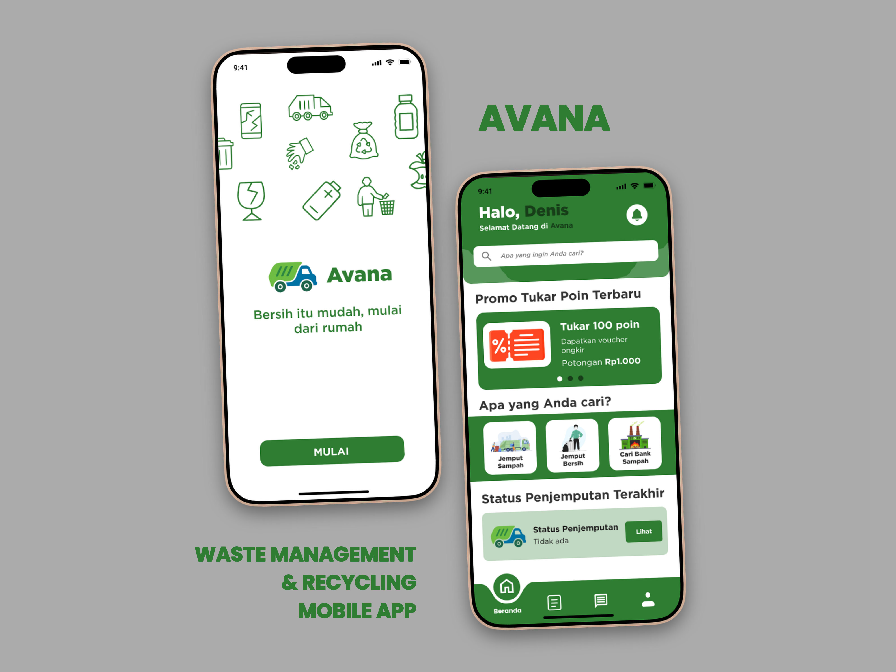
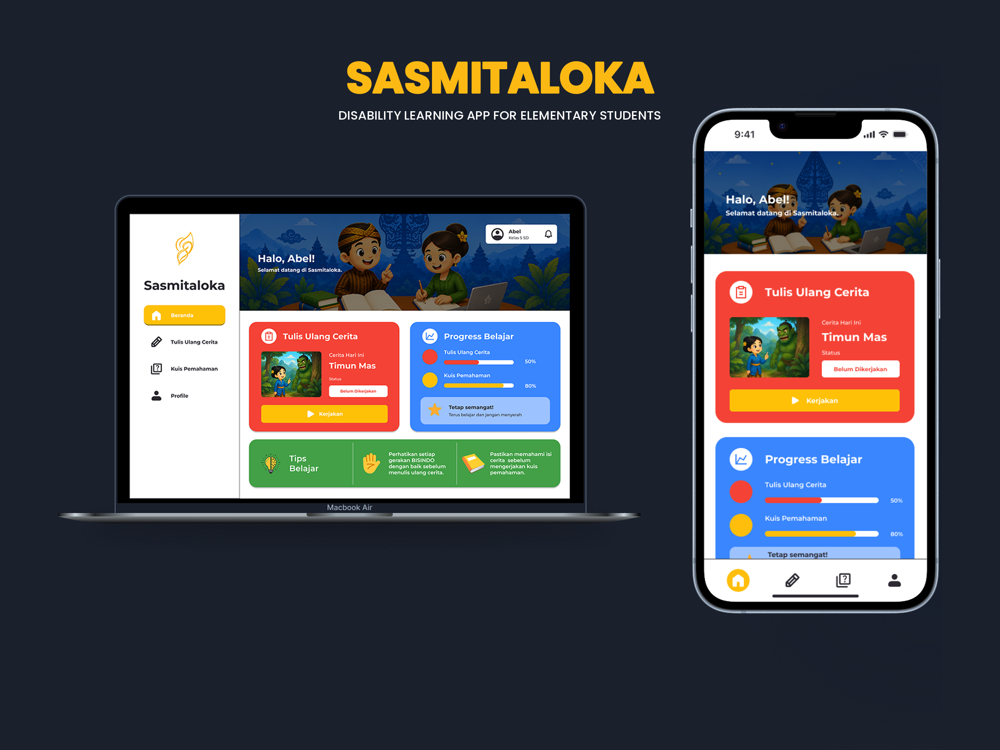
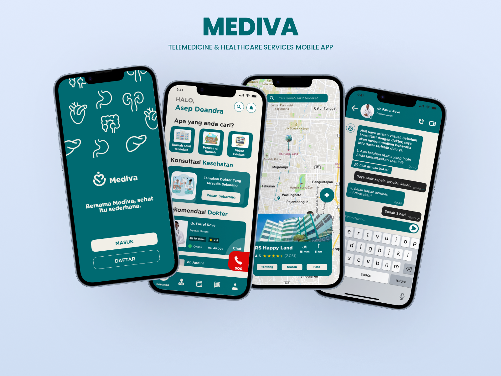

Informatics Student / AI & Data / UI/UX Designer
Exploring AI,
analyzing data,
and crafting
experiences.

Kastabel Deandra Putrawan
Informatics student at Universitas Ahmad Dahlan with a focus on Artificial Intelligence, Machine Learning, Data Analysis, and UI/UX Design. Passionate about learning data patterns and designing useful digital solutions.
Location Yogyakarta, ID
University Ahmad Dahlan
GPA 3.88 / 4.00
Selected
Works.
2025 — 2026

Machine Learning • 2026
News Category Classification
A Machine Learning pipeline using TF-IDF vectorization and Logistic Regression to automatically classify news headlines into World, Sports, Business, and Sci/Tech categories.
Explore Pipeline →UI/UX Design • 2025
Avana — Waste Pickup Experience
User experience (UX) and interface (UI) design for a digital waste pickup booking application based on extensive user research.
View Case Study →

UI/UX Design • 2025–2026
Sasmitaloka — Inclusive Learning PWA
UI/UX design for a Progressive Web App (PWA) tailored for deaf elementary students (grades 4–6). Integrating Javanese Kawung batik aesthetics, Indonesian folktales, BISINDO sign language videos, story rewriting, and comprehension quizzes.
View Case Study →UI/UX Design • 2025–2026
MEDIVA — Telemedicine & Healthcare Mobile App
A modern Telemedicine & Healthcare Services App UI/UX design featuring nearest hospital geolocation mapping, doctor consultations with virtual assistants, home care visits, educational videos, and quick emergency SOS dispatch.
View Case Study →
Toolkit & Experience.
Computer Laboratory Assistant
UAD • 2025 — Present
Guiding students in learning Informatics Logic and Artificial Intelligence (AI). Assisting in evaluating students' understanding of data processing algorithms.
Gemini Certified Student
Core Skills
1st Place — UI/UX Mobile App Competition
IFWeek x PARMATIK 2026. Successfully engineered an innovative digital product interface outperforming dozens of other participants.
Finalist — UI/UX Competition (I-COM)
HMIF Universitas Ahmad Dahlan 2024. Designed innovative sustainable technology solutions centered on broader societal benefits.